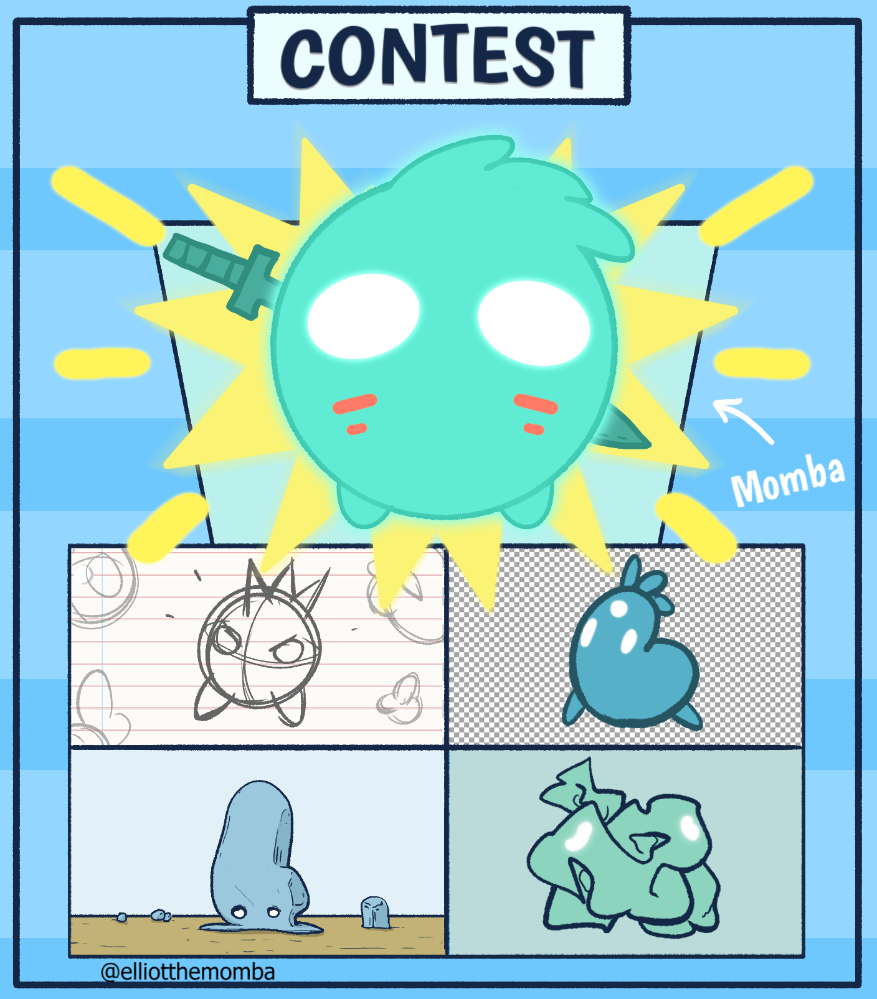
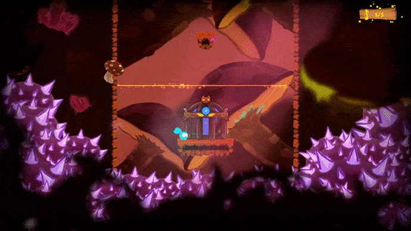

Do you remember this?
And this?
Let's introduce Calila. 💜
— Plain and Game Studio (@plainandgame) October 19, 2020
🎮 Get Elliot on Steam: https://t.co/JieP9HYN9G#elliotmomba #indiegames #indiedev #IndieGameDev #gamedev #Steam #steamgames #madewithunity #unity #videogames #videogameart #gameart #ComicArt #cute #adorable #character #characterdesign #newcharacter pic.twitter.com/AIACZoY4Xi
Torampetto is sus...
— Plain and Game Studio (@plainandgame) October 22, 2020
🎮 Get Elliot on Steam: https://t.co/JieP9HYN9G#elliotmomba #indiegames #indiedev #IndieGameDev #gamedev #Steam #steamgames #madewithunity #unity #videogames #videogameart #gameart #ComicArt #cute #adorable #character #characterdesign #newcharacter pic.twitter.com/lT3ho8aWg8
Oh no! CALILA!!!
— Plain and Game Studio (@plainandgame) October 23, 2020
🎮 Get Elliot on Steam: https://t.co/JieP9HYN9G#elliotmomba #indiegames #indiedev #IndieGameDev #gamedev #Steam #steamgames #madewithunity #unity #videogames #videogameart #gameart #ComicArt #cute #adorable #character #characterdesign #newcharacter pic.twitter.com/aHBbnFT9HP
Calila's Meme Time
— Plain and Game Studio (@plainandgame) October 24, 2020
🎮 Get Elliot on Steam: https://t.co/JieP9HYN9G#ElliotMomba #IndieGames #IndieDev #GameDev #IndieGameDev #Steam #SteamGames #MadeWithUnity #Unity2D #Videogames #Videogame #NewCharacter #CharacterDesign #Meme #Memes pic.twitter.com/RXRxZ68d0t
Well... now we have this:
The winner of the Momba Contest was Andrés Borja with this incredible design of a Momba called Calila. The prize of this contest was to implement it in Elliot and this is what we have done!
Unfortunately Torampetto kidnapped Calila and she is now a prisioner! Elliot must save her with the other captured Mombas.